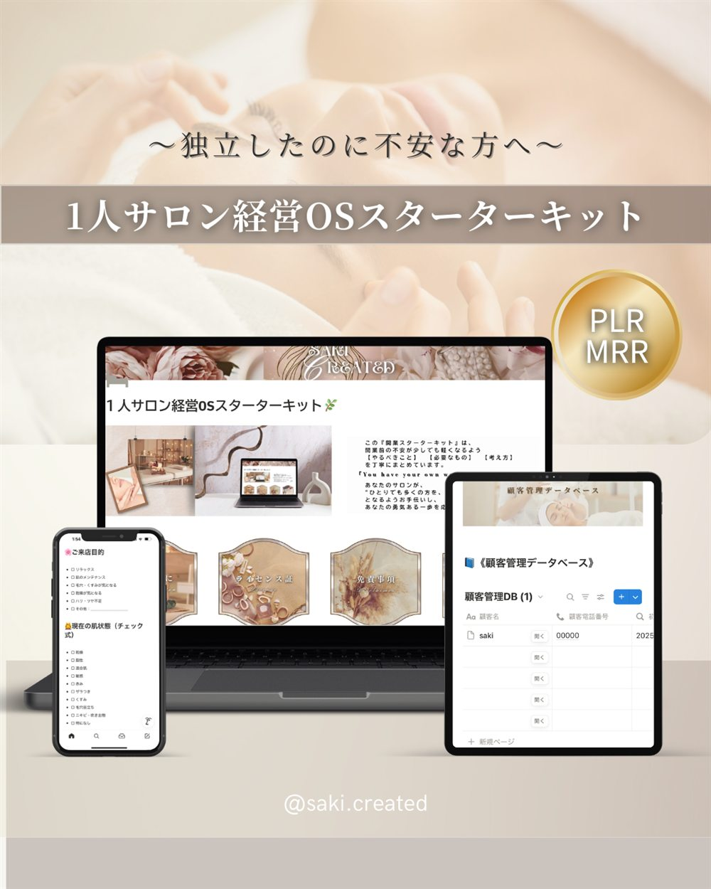

FOR SALON OWNERS
技術はある。お客様も来ている。
それなのに、不安が消えないあなたへ。
SCROLL
夢だった、1人サロン。
それなのに、心はいつも落ち着かない。
ひとつでも当てはまったなら、
この先を読んでみてください。
毎日こんなに頑張っているのに、
どうしてうまくいかないんだろう。
予約も、お金も、お客様の記録も、やることリストも。
ぜんぶ別々の場所にある。
だから、頭の中がいつも忙しい。
なぜ売上が読めないと、こんなに心がざわつくのか。まず、その理由をほどいていきます。
予約・お金・お客様の記録。散らばったものを、どうひとつにまとめていくか。
やることが多すぎて動けない時に、いちばん最初に整える場所はどこか。
一度整えて終わり、にしない。忙しい日でも回りつづける「仕組み」の考え方。
サキ
1人サロンの『うら側整え屋』
私はサロンのオーナーではありません。
現場で施術をしながら、お店の「うら側」の管理を任されてきた立場です。
だから、経営の理屈はうまく語れません。
でも、予約表が埋まらない日の空気も、当日キャンセルの電話を切ったあとの気持ちも、知っています。
技術のある人が、うら側がバラバラなせいで自信をなくしていく。
それが、いちばん、もったいないと思っています。
難しい言葉は使いません。
「整える」という感覚のまま、受け取ってもらえたら嬉しいです。
今日すぐ、全部を変えなくて大丈夫です。
まずは、読むだけ。
それだけで、頭の中が少し静かになるはずです。
※ noteのページが開きます
Threadsで、日々の気づきも届けています
いきなり買わなくて大丈夫です。
まずは無料サンプルから、で十分です。